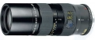

器材库 > 35mm画幅MF变焦镜头 > R 80-200/4 Vario-Elmar

详细规格
发布日期
未知
焦距
80mm-200mm
最大光圈
f/4
最小光圈
f/22
视角（对角）
29-12.5
镜头结构
12片/9组
最近对焦距离
110cm
滤镜口径
60mm
镜头卡口
Leica R
防抖
否
颜色
黑色
尺寸
71×165mm
重量
1020g
cybertron2016-09-27 21:294.67 分
操作性 5.00耐用性 5.00性价比 4.50解像力 4.50色彩还原 4.50机械结构 4.50
君子阳阳20112015-09-24 15:394.75 分
操作性 4.50耐用性 5.00性价比 4.00解像力 5.00色彩还原 5.00机械结构 5.00
puma1102013-04-22 21:004.92 分
操作性 4.50耐用性 5.00性价比 5.00解像力 5.00色彩还原 5.00机械结构 5.00
wuping82012-12-29 08:094.92 分
操作性 4.50耐用性 5.00性价比 5.00解像力 5.00色彩还原 5.00机械结构 5.00
lingwanbo2012-10-11 20:445 分
操作性 5.00耐用性 5.00性价比 5.00解像力 5.00色彩还原 5.00机械结构 5.00
danier2011-06-04 09:545 分
操作性 5.00耐用性 5.00性价比 5.00解像力 5.00色彩还原 5.00机械结构 5.00
billgmh2011-03-21 21:395 分
操作性 5.00耐用性 5.00性价比 5.00解像力 5.00色彩还原 5.00机械结构 5.00
267945342010-07-04 19:265 分
操作性 5.00耐用性 5.00性价比 5.00解像力 5.00色彩还原 5.00机械结构 5.00
防腐木头2009-04-06 12:254.58 分
操作性 4.00耐用性 4.50性价比 4.50解像力 5.00色彩还原 5.00机械结构 4.50
冰雪骄子2009-03-15 16:515 分
操作性 5.00耐用性 5.00性价比 5.00解像力 5.00色彩还原 5.00机械结构 5.00
blueprintc2008-09-12 00:544.92 分
操作性 5.00耐用性 5.00性价比 5.00解像力 4.50色彩还原 5.00机械结构 5.00
青奴2008-03-15 13:204.58 分
操作性 3.50耐用性 5.00性价比 4.00解像力 5.00色彩还原 5.00机械结构 5.00
SIGMA3X2006-08-24 10:534.83 分
操作性 4.50耐用性 5.00性价比 4.50解像力 5.00色彩还原 5.00机械结构 5.00
Elysia2005-07-18 13:104.58 分
操作性 4.50耐用性 4.50性价比 5.00解像力 4.50色彩还原 4.50机械结构 4.50
吴禹珩2002-12-05 12:504.58 分
操作性 4.50耐用性 4.50性价比 4.50解像力 4.50色彩还原 5.00机械结构 4.50
产品图 / 样片
徕卡 R 80-200/4 Vario-Elmar
评测 / 相关文章
该产品暂无存档的评测文章